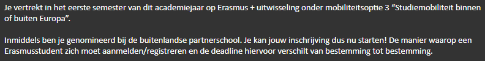

De nominatie
5 april 2022
Na enorm veel mails, gesprekken en een Go Abroad Fair was het zover. Het grootste deel van mijn programma was gemaakt en al deels goedgekeurd. Genoeg dus om mij te nomineren, hierdoor kan ik mij inschrijven bij TU Dublin. Het programma samenstellen was een lang proces dat nog steeds bezig is. De informatie die je vindt is enorm beperkt waardoor er naar elk deel van de opleiding een mail moest gestuurd worden. Gelukkig kreeg ik hier (meestal) snel antwoord op. Ook was er een dichte opvolging door de ankerpersoon die op verschillende momenten een stand van zaken vroeg en hielp waar nodig.
Weer een stapje dichter!